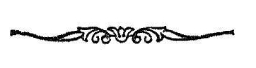

श्रीमन्महामाहेश्वराचार्याभिनवगुप्तविरचिते
श्रीजयरथकृत विवेकाव्यटीकोपते
अथ
श्री तन्त्रालोके

श्रीमन्महामाहेश्वराचार्याभिनवगुप्तविरचिते
श्रीजयरथकृत विवेकाव्यटीकोपते

सप्तविंशतितममाह्निकम् ।

देवं चक्रव्योमग्रन्थिगमाधारनाथमजम् ।
अपि परसंविदैः स्पृहणीयं स्पृहणमस्मि नतः ॥
इदानीं द्वितीयार्धेन नित्यावशेषरूपां लिङ्काच
वक्तुमाह
अथोच्यते लिङ्गपूजा
सूचिता मालिनीमते ॥ १ ॥
सूचितेति
’यजेदाध्यात्मिकं लिङ्गं.....................। ’(१८।३ )
इत्यादिना ॥ १ ॥